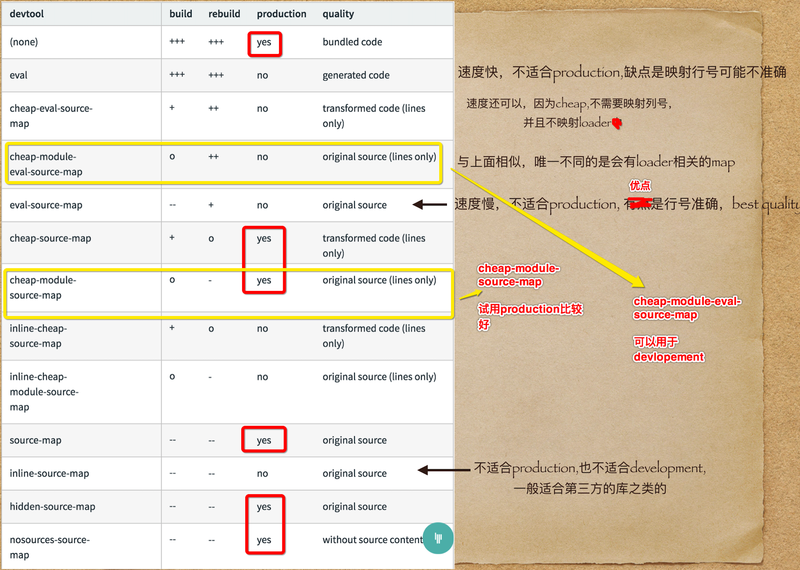
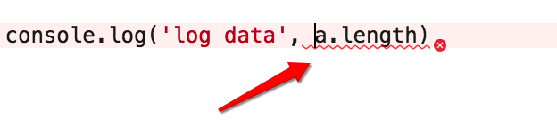
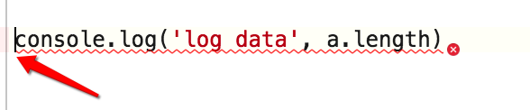

上篇文章整理了几个点，这篇文章接着记录下我觉得有总结意义的点。
loader 和 pugin的区别
loader上篇总结了：webpack只知道处理 js 类的文件，对于很多其他类型的模块如图片，字体等他不知道怎么处理，这时候就可以设置相关的loader，告诉它怎么处理这些模块。
plugin跟loader不同，我理解plugin是可以在webpack分析执行的某些节点或者生命周期时，做的某些操作。
如 webpackHtmlPlugin,在打包最后处理，生成html文件。 cleanWebpackPlugin，在webpack打包的最开始，把dist目录清空。
plugin有点像react.vue里的如mounted, beforeRouteEnter等节点，在某个时刻做某些事情。
1 | plugins: [ |
理解sourceMap和webpack4中sourcemap的使用
sourcemap 是一个映射关系，映射了打包后的某个代码位置对应于打包前的代码位置，方便开发者定位问题。
webpack4中设置 sourcemap 可以使用 devtool 的值，或者使用SourceMapDevToolPlugin和EvalSourceMapDevToolPlugin，两个不可同时使用。
webpack4, development模式默认的devtool模式是 eval, 若mode=production并且不设置 devtool 则没有 sourcemap。
所有的 sourcemap 可以设置的值，有如下：

我觉得可以不用去分别去记忆有哪些类型的sourcemap,所有的sourcemap都是几种关键字组合而成，每种可能代表一个含义，理解其中的关键字，然后再去翻看文档需要哪种即可。
下面看下这几种关键字,理解后再来看上述的就可以理解了。
1、 eval
使用eval包裹模块代码
1 | eval("// import Test from './Test'\n// import './1.png'\n// import './1.css'\n// new Test()\n\nconsele.log('log data')\n\n\n//# sourceURL=webpack:///./src/index.js?"); |
2、 source-map
产生 .map 文件，sourcemap 不会和 js 代码耦合在一起。1
2main.bundle.js
main.bundle.js.map
3、 cheap
不包含列信息，正常情况下我们只用知道是哪一行就可以了。如果加上哪一列相当于解析更费时间。
如：eval, 此时光标是值在出错的行及列。

而：cheap-eval-source-map,此时光标只在最前面。

4、inline
将 .map 文件作为 DataURI嵌入，这种情况将不单独生成 .map 文件，而是跟bundle文件在一个文件里。
1 | //# sourceMappingURL= |
5、module
除了提示业务代码本身的map外，其他模块如loader，也会被映射有相应的sourcemap。
其实看官方文档会更加清楚，它会讲为什么有些类型是不适合生产或者开发环境，或者能够告诉你什么是 origin code 或者 transformed code。
sourcemap的更加细节的原理，可以参考JavaScript Source Map 详解-阮一峰
webpack-dev-server HMR
webpack4中开启
- 开启
devsever hot: true, hotOnly: true - 使用
new webpack.HotModuleReplacementPlugin()
1 | devServer: { |
这样还不够能实现js的热更新，如果要形成js的热更新，你还要告诉在代码里告诉webpack,我这个模块如果被修改了，要执行什么操作，如：
1 | if (module.hot) { |
这告诉了我们如果print.js改变了，则会打印一句话。若果每个地方都这么干，我们写代码会很累，所以可以：
- 借助
Vue Loader、React Hot Loader， 此 loader 支持 vue 组件的 HMR，提供开箱即用体验，不用自己再去写module.hot - 借助于
style-loader，使用模块热替换来加载 CSS ,此 loader 在幕后使用了module.hot.accept，在 CSS 依赖模块更新之后，会将其 patch(修补) 到<style>标签中。
webpack babel
下面大概记录下整体的流程，以及几个模块之间的联系、区别及注意事项：
- 安装
babel-loader,babel-core babel-core是babel的核心库,babel-loader是babel与webpack关系的桥梁- 在
module rule里设置，若是js文件结尾，用babel-loader处理 - 注意
babel-loader只是与webpack打通，不进行es6转换 - 所以需要安装
babel-preset-env,他负责转换新的es6的语法（syntax）,但是不会去转换map或者promise,weakmap, find这种对象和函数。只转换语法如箭头函数或者const这种语法 - 所以需要
babel-polyfill,为当前环境提供垫片，转换为新的api, - 如果直接引用，所有的都会被打包，所以需要添加
useBuiltIns,实现方法转换的按需加载，减少文件提示，根据业务代码里使用情况来打包，体积会减少很多。 - 但是
babel-polyfill是在window上的，会污染全局变量,如果是打包类库或者第三方库就不合适了。 - 所以需要
@babel/plugin-transform-runtime这个插件，这样可以不用污染全局变量。
1 | // 如果是自己的业务代码 |
备注下，babel-preset-env不会转换的有：
- 全局对象，如
Promise,map,WeakMap等 - 全局函数，如
Array.from,Object,assign等 - 示例方法，如
Array.prototype.includes等
注意presets的执行顺序也是从下往上，从右往左的顺序。如果是第三方类库:
事实上这些配置都可以放在.babelrc文件中。
总结
本篇文章主要是自我知识的梳理及记录。
周末在家，总觉得那种没啥事，不用出门，也不用加班，看看游戏视频，看看书遛遛狗的日子，才叫周末。📚🌲